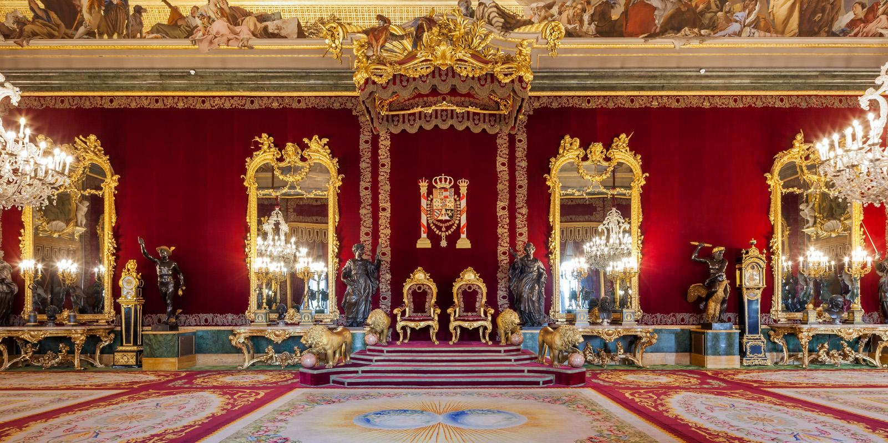
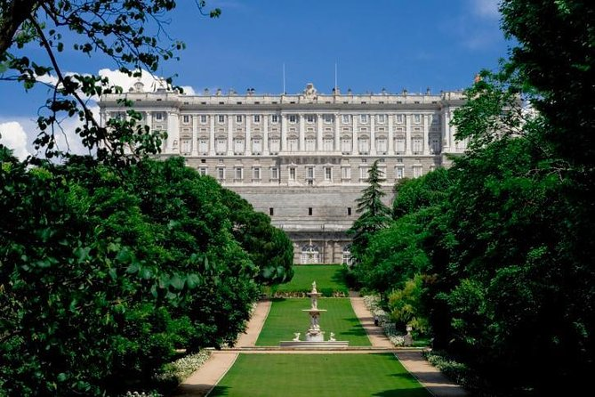
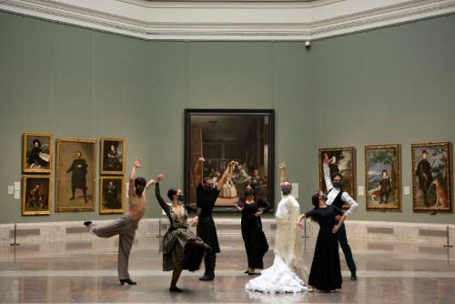

¿Qué visitar en Madrid?
Parque del Retiro
 El parque del Retiro es considerado una de las más conocidas atracciones turísticas de la ciudad. Contiene una gran cantidad de conjuntos arquitectónicos, paisajísticos y escultóricos de los siglos XVII a XXI. Algunos de lo más comunes son el Monumento a Alfonso XII, el Palacio de Cristal, la Puerta de Felipe IV, el Estanque Grande, el Real Observatorio Astronómico y la fuente de la Alcachofa. La entrada al Parque del Retiro es gratuita la entrada al retiro es totalmente gratuita y no solo disfrutarás del paseo, sino también de los espectáculos proporcionados por los artistas callejeros.
El parque del Retiro es considerado una de las más conocidas atracciones turísticas de la ciudad. Contiene una gran cantidad de conjuntos arquitectónicos, paisajísticos y escultóricos de los siglos XVII a XXI. Algunos de lo más comunes son el Monumento a Alfonso XII, el Palacio de Cristal, la Puerta de Felipe IV, el Estanque Grande, el Real Observatorio Astronómico y la fuente de la Alcachofa. La entrada al Parque del Retiro es gratuita la entrada al retiro es totalmente gratuita y no solo disfrutarás del paseo, sino también de los espectáculos proporcionados por los artistas callejeros.
Palacio Real
 El Palacio Real de Madrid es el más grande de Europa Occidental y uno de los más grandes del mundo. Sus más de 135 000 metros cuadrados y 3.418 habitaciones han sido testigos de siglos de la historia de España. Es una de las pocas residencias oficiales de Jefes de Estado que está abierta al público. Casi 2 millones de visitantes vienen cada año a descubrir sus rincones, sus obras de arte y sus tesoros únicos en el mundo.
Jardines de Sabatini
 Jardines de tipo clasicista creados en la década de 1930 en el lugar que ocupaban las caballerizas construidas por Sabatini para el Palacio Real, de ahí el nombre. Situados frente a la fachada norte del Palacio Real y promovidos durante la Segunda República, los jardines se terminaron de construir tras la Guerra Civil.
 El Museo Nacional del Prado, que celebró en 2019 su bicentenario, preside uno de los itinerarios turísticos más visitados de la capital: el Paseo del Arte. Además de Las meninas de Velázquez y de Los fusilamientos del 3 de mayo de Goya, en sus salas pueden verse obras maestras de las escuelas española, italiana y flamenca. El Prado cuenta con una valiosa colección de 8600 cuadros y más de 700 esculturas. Es recomendable consultar una guía y preparar la visita antes de entrar en el museo.
Templo de Debod
 El Palacio Real de Madrid es el más grande de Europa Occidental y uno de los más grandes del mundo. Sus más de 135 000 metros cuadrados y 3.418 habitaciones han sido testigos de siglos de la historia de España. Es una de las pocas residencias oficiales de Jefes de Estado que está abierta al público. Casi 2 millones de visitantes vienen cada año a descubrir sus rincones, sus obras de arte y sus tesoros únicos en el mundo.
El Palacio Real de Madrid es el más grande de Europa Occidental y uno de los más grandes del mundo. Sus más de 135 000 metros cuadrados y 3.418 habitaciones han sido testigos de siglos de la historia de España. Es una de las pocas residencias oficiales de Jefes de Estado que está abierta al público. Casi 2 millones de visitantes vienen cada año a descubrir sus rincones, sus obras de arte y sus tesoros únicos en el mundo.